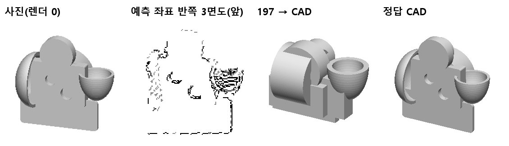

197 예측 그림 182 — 실제로 들어올 흔들린 반쪽 3면도로 ⑥ 을 다시 배운다 (11-14 · 모델197.py · 손으로 정리)
분석
한 줄로
물음: ⑤ 가 예측한 좌표로 그린 반쪽 3면도(흔들리고 끊긴 그림)로 ⑥ 을 배우면, 처음부터 끝까지 CAD 의 모양 맞음이 오르나?
답: 조금. 같은 입력에서 지금 182 0 % · 194 1 % 인데 197 은 6.1 % 다. 판정선(통과 10 % · 실패 6 % 이하) 사이라 「사이」.
왜 이 판을 했나
tr194 는 정답 좌표로 그린 깨끗한 반쪽 그림으로 배웠고, 예측 좌표 그림을 넣으면 모양 맞음 5.1 % 였다(정답 좌표 13.1 %). 사용자는 「임의의 이미지에서 3면도를 뽑으면 굳이 완벽한 기하는 필요 없다」고 했다 — 11-10 결정(주 목표 모양 맞음 · 정밀은 서비스)과 같다. 그래서 ⑤ 를 완벽하게 만드는 대신 ⑥ 이 흔들린 그림을 읽게 했다. 그림은 점 대신 이어진 선(사용자 「점이 아니라 직선 또는 곡선」)으로 그렸다. 우리 목표는 그림 한 장 → 3면도 → CAD 코드.
바꾼 것 하나
⑥ 의 학습 그림. 생성기 부품 3,000~11,999(193b 가 학습에 안 쓴 부품) × 렌더 두 장 → 193b 예측 좌표 → z 방향 넷 중 부분 점구름 실루엣이 정답과 가장 맞는 쪽 → 이웃 잇기 → 반쪽 3면도. 182 무게에서 이어 30 바퀴 · 망 · 손실 · 학습률은 194 와 같다.
결과

| 같은 입력 · 탐침 시험 99 · 렌더 0 | 197 | 194 | 지금 182 | 판정선 | 넘었나 |
|---|---|---|---|---|---|
| 모양 맞음(위상 + 5 %) | 0.061 | 0.01 | 0.0 | 통과 0.10 · 실패 0.06 이하 | 사이 |
| 10 % 안 | 0.152 | 0.04 | 0.0 | ||
| 같다 3 % | 0.02 | 0.0 | 0.0 |
왜 이렇게 나왔나
확인한 것
- 시험 손실은 4 바퀴 7.28 이 최저이고 30 바퀴 13.57 까지 올랐다. 학습 부품 9,000 개로는 ⑥ 이 금방 외운다.
- z 방향은 넷이 거의 고르게 골렸다(4,568 · 4,615 · 4,432 · 4,537 장) — 193b 좌표의 「앞」은 사진마다 제멋대로다. 실루엣으로 고른 방향은 정답 좌표로 고른 것과 시험 20 장에서 0.9 같았다.
- 그림(6 부품): 고리 + 돔 · 판 + 반구 + 컵 · 원뿔 · 둥근 상자는 짜임이 비슷, 받침 + 반원판 · 반구 판은 틀림.
짐작 (아직 확인 안 함)
- 외움이 빨라 부품을 늘리면 오를 것이다. tr191 에서 ⑤ 는 데이터로 안 올랐지만 ⑥ 은 4 바퀴부터 외운다.
한계
- 시험 99 · 시드 하나 · 30 바퀴 하나만 판정(4 · 10 바퀴 무게는 안 잼).
- 방향 고르기에 정답 실루엣을 썼다(채점용 · 방향은 사진으로 못 정함).
- 합성 렌더뿐 · 실제 사진은 아직.
- 같은 날 tr195(모서리 잇기 그림으로 182 다시 배움)는 자료 67 % 에서 멈췄다(방향을 ⑥ 정밀로 잠깐 틀었다가 이 판으로 돌아옴).
배운 것과 다음
⑥ 이 흔들린 그림을 읽게 하는 건 같은 입력에서 6 배였지만, 처음부터 끝까지는 아직 6 % 다.
- 부품을 늘림 — 확장 사양 9.8 만 개를 렌더해 예측 좌표 그림으로.
- 실제 사진에 처음부터 끝까지 처음 돌려 보기.